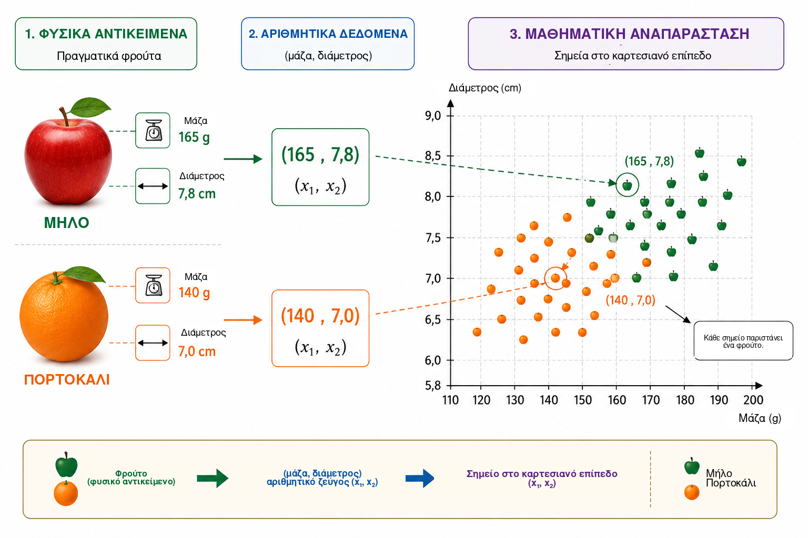
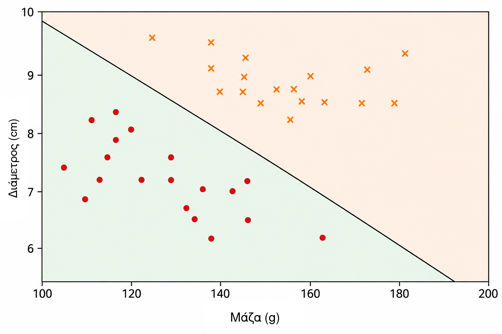
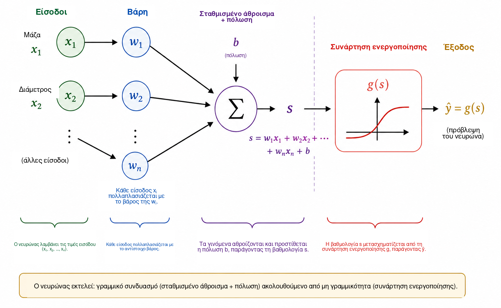
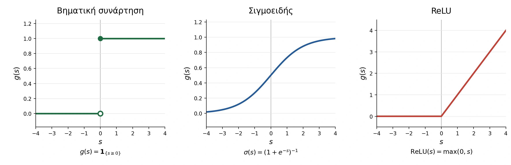
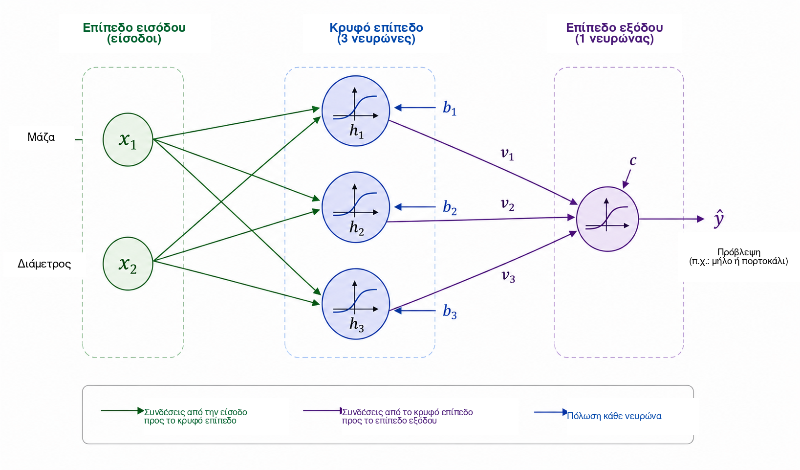
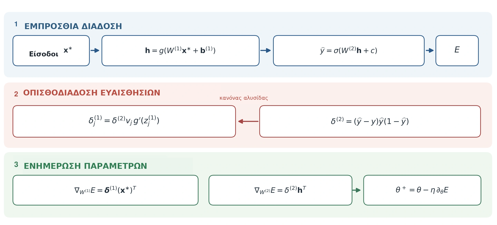
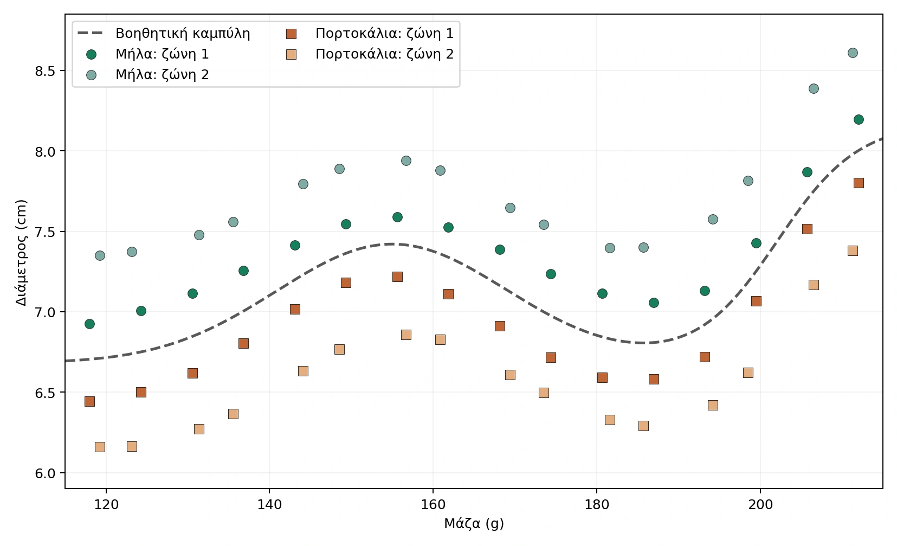
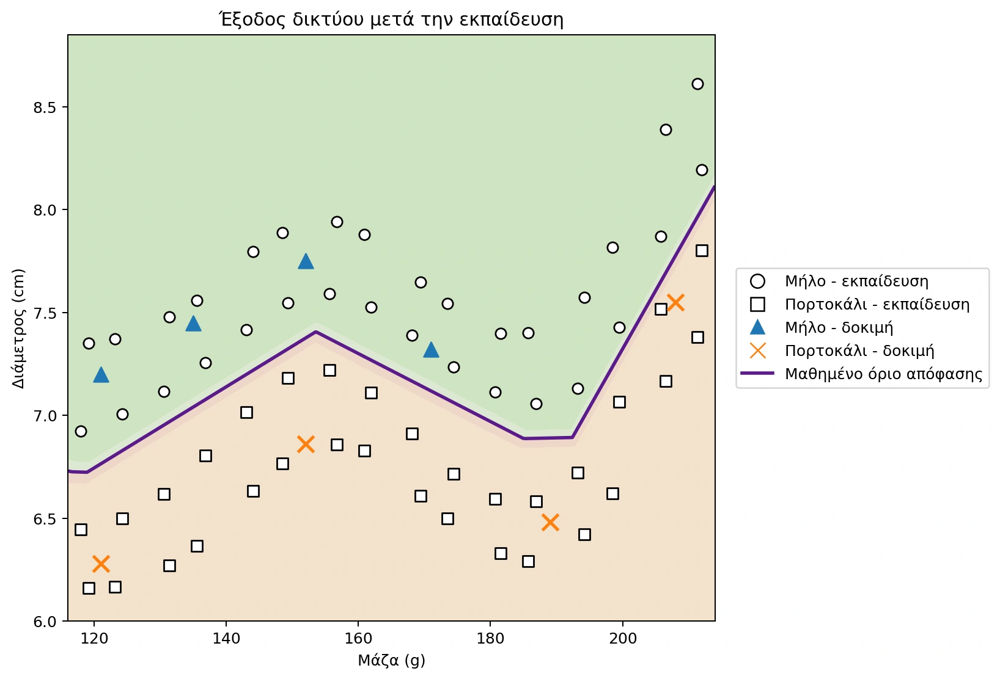

Πότε μπορεί να μάθει ένας υπολογιστής;
Στην καθημερινή ζωή παίρνουμε αποφάσεις ταξινόμησης σχεδόν χωρίς να το αντιλαμβανόμαστε. Κοιτάζοντας ένα φρούτο, αναγνωρίζουμε γρήγορα αν είναι μήλο ή πορτοκάλι· όταν φτάνει ένα μήνυμα στο τηλέφωνο, διακρίνουμε μια κανονική συνομιλία από ανεπιθύμητη διαφήμιση· στις ιατρικές αναλύσεις, διαφορετικές μετρήσεις μπορούν να συνδυαστούν για να υποστηρίξουν μια απόφαση· και στα χρηματοπιστωτικά ιδρύματα αξιολογούνται πολλά δεδομένα πριν από τη χορήγηση πίστωσης. Σε όλα αυτά τα παραδείγματα, πολλά χαρακτηριστικά εξετάζονται από κοινού ώστε να παραχθεί μια απάντηση.
Σε πολλά παραδοσιακά προγράμματα υπολογιστών, οι κανόνες που παράγουν αυτή την απάντηση γράφονται ρητά από τον προγραμματιστή. Η προσέγγιση αυτή λειτουργεί καλά όταν οι κανόνες είναι γνωστοί και μπορούν να διατυπωθούν καθαρά. Γίνεται λιγότερο αποτελεσματική όταν τα δεδομένα παρουσιάζουν μεγάλη μεταβλητότητα ή όταν είναι δύσκολο να διατυπωθούν εκ των προτέρων όλες οι συνθήκες που απαιτούνται για μια καλή απόφαση. Αυτό οδηγεί σε ένα φυσικό ερώτημα:
Μπορούμε να κατασκευάσουμε ένα πρόγραμμα που να μαθαίνει έναν κανόνα απόφασης από παραδείγματα, αντί να λαμβάνει τον κανόνα εκ των προτέρων;
Αυτή είναι μία από τις κεντρικές ιδέες της μηχανικής μάθησης, ενός πεδίου της τεχνητής νοημοσύνης που μελετά μεθόδους με τις οποίες τα μοντέλα προσαρμόζονται από δεδομένα . Στην επιβλεπόμενη μάθηση, ο αλγόριθμος λαμβάνει παραδείγματα μαζί με τις σωστές απαντήσεις και αναζητούμε ένα μοντέλο που να μπορεί να κάνει χρήσιμες προβλέψεις και για περιπτώσεις που δεν χρησιμοποιήθηκαν κατά την εκπαίδευση. Ανάμεσα στα πολλά μοντέλα που αναπτύχθηκαν για αυτόν τον σκοπό, τα τεχνητά νευρωνικά δίκτυα έχουν αποκτήσει ιδιαίτερη σημασία σε εφαρμογές όπως η αναγνώριση εικόνων, η επεξεργασία γλώσσας, η ανάλυση σημάτων και η πρόβλεψη χρονοσειρών .
Η χρήση των νευρωνικών δικτύων ως γέφυρας ανάμεσα στα μαθηματικά, τις υπολογιστικές μεθόδους και την εκπαίδευση έχει ήδη συζητηθεί στο Professor de Matemática Online από τους Batista και Martins , οι οποίοι παρουσιάζουν μια δραστηριότητα που συνδυάζει επιμόρφωση εκπαιδευτικών, Python και αναγνώριση ψηφίων. Το παρόν άρθρο ακολουθεί μια συμπληρωματική διαδρομή. Κύριος στόχος μας είναι να καταστήσουμε ορατή την εσωτερική μαθηματική δομή ενός μικρού νευρωνικού δικτύου, ξεκινώντας από την αναλυτική γεωμετρία και προχωρώντας βήμα προς βήμα στον υπολογισμό κλίσεων και σε μια χειροποίητη υλοποίηση της οπισθοδιάδοσης.
Παρά την πολυπλοκότητα των σύγχρονων εφαρμογών, ο μαθηματικός πυρήνας ενός νευρωνικού δικτύου μπορεί να εισαχθεί με σχετικά οικείες ιδέες. Σε βασικό επίπεδο, ένα νευρωνικό δίκτυο είναι μια σύνθεση συναρτήσεων των οποίων οι παράμετροι προσαρμόζονται από δεδομένα. Ξεκινάμε με ένα απλό γεωμετρικό πρόβλημα, επανερμηνεύουμε μια διαχωριστική ευθεία ως τεχνητό νευρώνα, συνδέουμε πολλούς νευρώνες, μελετούμε τον ρόλο των συναρτήσεων ενεργοποίησης και δείχνουμε πώς οι παράγωγοι μπορούν να χρησιμοποιηθούν για την αυτόματη προσαρμογή των παραμέτρων του δικτύου. Στη συνέχεια υλοποιούμε ένα πλήρες μικρό παράδειγμα σε Python, με άμεση αντιστοιχία ανάμεσα στις εξισώσεις και τον κώδικα.
Μαθηματική αναπαράσταση του προβλήματος
Για να κατανοήσουμε πώς λειτουργεί ένα νευρωνικό δίκτυο, ξεκινάμε με ένα σκόπιμα απλό πρόβλημα: να διακρίνουμε μήλα από πορτοκάλια. Ένα φρούτο διαθέτει πολλά χαρακτηριστικά που θα μπορούσαν να είναι χρήσιμα για αυτόν τον σκοπό, όπως χρώμα, μάζα, διάμετρος, υφή και άρωμα. Ωστόσο, ένα πρώτο μαθηματικό μοντέλο δεν χρειάζεται να περιλαμβάνει όλη αυτή την πολυπλοκότητα. Θα χρησιμοποιήσουμε μόνο δύο εύκολα μετρήσιμες ποσότητες: τη μάζα, σε γραμμάρια, και τη διάμετρο, σε εκατοστά.
Κάθε φρούτο παριστάνεται επομένως από ένα διατεταγμένο ζεύγος \[(x_1,x_2),\] όπου \[x_1=\text{μάζα} \qquad\text{και}\qquad x_2=\text{διάμετρος}.\]
Το ζεύγος \((155,\;7.2)\) παριστάνει λοιπόν ένα φρούτο με μάζα \(155\) g και διάμετρο \(7.2\) cm. Αντικαθιστώντας το φυσικό αντικείμενο με δύο αριθμητικές μετρήσεις, αντιστοιχίζουμε κάθε φρούτο σε ένα σημείο του καρτεσιανού επιπέδου: η πρώτη συντεταγμένη δίνει τη μάζα και η δεύτερη τη διάμετρο. Το Σχήμα 1 απεικονίζει αυτή την αναπαράσταση για ένα υποθετικό σύνολο μήλων και πορτοκαλιών.

Αυτός ο μετασχηματισμός αλλάζει τη φαινομενική φύση του προβλήματος. Αντί να ρωτάμε άμεσα πώς μπορούμε να αναγνωρίσουμε ένα μήλο ή ένα πορτοκάλι, μπορούμε να θέσουμε ένα γεωμετρικό ερώτημα: πώς μπορούν να διαχωριστούν στο επίπεδο τα σημεία που ανήκουν στις δύο κλάσεις; Αυτή η αλλαγή οπτικής είναι θεμελιώδης στη μηχανική μάθηση. Εικόνες, κείμενα, ήχοι και πειραματικά σήματα πρέπει όλα να μετατρέπονται σε αριθμητικές αναπαραστάσεις πριν μπορέσει ένας αλγόριθμος να τα επεξεργαστεί. Στο παράδειγμά μας κάθε αντικείμενο έχει μόνο δύο συντεταγμένες· σε πραγματικές εφαρμογές μια αναπαράσταση μπορεί να περιλαμβάνει εκατοντάδες, χιλιάδες ή ακόμη και εκατομμύρια συνιστώσες. Η αρχή παραμένει η ίδια: κάθε παράδειγμα αντιστοιχίζεται σε ένα σύνολο αριθμών και το μοντέλο αναζητά έναν κανόνα που απεικονίζει αυτή την αναπαράσταση στην επιθυμητή απάντηση.
Ξεκινάμε με τον απλούστερο διαθέσιμο γεωμετρικό κανόνα και ρωτάμε αν μία μόνο ευθεία μπορεί να διαχωρίσει ικανοποιητικά τα σημεία των μήλων από τα σημεία των πορτοκαλιών.
Μια ευθεία ως ταξινομητής
Από τη στιγμή που κάθε φρούτο παριστάνεται ως σημείο στο καρτεσιανό επίπεδο, η ταξινόμηση γίνεται γεωμετρικό πρόβλημα: μπορεί μια ευθεία να διαχωρίσει τα μήλα από τα πορτοκάλια; Το ερώτημα αυτό συνοψίζει τη βασική ιδέα μιας σημαντικής οικογένειας μεθόδων μηχανικής μάθησης, γνωστών ως γραμμικοί ταξινομητές.
Θεωρήστε μια ευθεία που διέρχεται από το νέφος των δεδομένων, όπως φαίνεται στο Σχήμα 2. Η ευθεία χωρίζει το επίπεδο σε δύο ημιεπίπεδα. Αν τα περισσότερα σημεία που αντιστοιχούν σε μήλα βρίσκονται στη μία πλευρά και τα περισσότερα σημεία που αντιστοιχούν σε πορτοκάλια στην άλλη, η θέση ενός νέου φρούτου ως προς την ευθεία μπορεί να χρησιμοποιηθεί ως κανόνας ταξινόμησης. Αφού μετρήσουμε τη μάζα και τη διάμετρο, παριστάνουμε το φρούτο με ένα σημείο και προσδιορίζουμε σε ποια πλευρά της ευθείας βρίσκεται.

Στο καρτεσιανό επίπεδο \((x_1,x_2)\), μια ευθεία μπορεί να περιγραφεί από \[w_1x_1+w_2x_2+b=0, \qquad (w_1,w_2)\neq(0,0).\]
Το διάνυσμα \((w_1,w_2)\) είναι κάθετο στην ευθεία και επομένως καθορίζει τον προσανατολισμό της, ενώ η παράμετρος \(b\) συμβάλλει στη θέση της. Η αναπαράσταση αυτή περιέχει μια μικρή πλεονάζουσα πληροφορία: ο πολλαπλασιασμός των \(w_1\), \(w_2\) και \(b\) με την ίδια μη μηδενική σταθερά παράγει ακριβώς την ίδια ευθεία. Επομένως, οι παράμετροι που περιγράφουν το όριο δεν είναι μοναδικές. Επιπλέον, η αριθμητική ερμηνεία τους εξαρτάται από την κλίμακα των μεταβλητών. Επειδή η μάζα μετριέται σε γραμμάρια και η διάμετρος σε εκατοστά, τα αριθμητικά μεγέθη των \(w_1\) και \(w_2\) δεν πρέπει να συγκρίνονται χωρίς να λαμβάνονται υπόψη οι διαφορετικές μονάδες.
Η ίδια η εξίσωση της ευθείας παρέχει έναν απλό τρόπο για να προσδιορίσουμε σε ποια πλευρά του ορίου βρίσκεται ένα σημείο. Ορίζουμε τη βαθμολογία \[s(x_1,x_2)=w_1x_1+w_2x_2+b.\]
Αν \(s(x_1,x_2)=0\), το σημείο βρίσκεται πάνω στην ευθεία. Αν \(s(x_1,x_2)>0\), βρίσκεται στο ένα ημιεπίπεδο· αν \(s(x_1,x_2)<0\), βρίσκεται στο άλλο. Αν συμφωνήσουμε ότι οι θετικές βαθμολογίες αντιστοιχούν σε μήλα και οι αρνητικές σε πορτοκάλια, ο κανόνας γίνεται \[\begin{cases} s(x_1,x_2)\geq 0 & \Longrightarrow \text{μήλο},\\ s(x_1,x_2)<0 & \Longrightarrow \text{πορτοκάλι}. \end{cases}\]
Για παράδειγμα, θεωρήστε το όριο που ορίζεται από \[w_1=\frac{1}{10}, \qquad w_2=2, \qquad b=-30.\] Για ένα φρούτο με μάζα \(160\) g και διάμετρο \(7.8\) cm, \[\begin{aligned} s &=\frac{1}{10}\times160+2\times7.8-30\\ &=16+15.6-30\\ &=1.6. \end{aligned}\] Επειδή η βαθμολογία είναι θετική, το σημείο βρίσκεται στο ημιεπίπεδο που έχουμε συσχετίσει με τα μήλα. Αυτός ο ταξινομητής θα κατέτασσε επομένως το φρούτο ως μήλο.
Δεν δίνει κάθε επιλογή των \(w_1\), \(w_2\) και \(b\) καλή ταξινόμηση. Ορισμένες ευθείες διαχωρίζουν τις δύο ομάδες ανεπαρκώς, ενώ άλλες κάνουν λιγότερα σφάλματα. Το πρόβλημα της μάθησης συνίσταται ακριβώς στη χρήση ήδη επισημασμένων παραδειγμάτων ώστε να προσδιοριστούν τιμές παραμέτρων που μειώνουν κάποιο μέτρο του σφάλματος του μοντέλου. Αντί να προγραμματίζουμε απευθείας τη θέση της ευθείας, θέλουμε ο αλγόριθμος να προσαρμόζει τους συντελεστές της με βάση τα δεδομένα.
Μία μόνο ευθεία μπορεί να λειτουργεί καλά όταν οι κλάσεις είναι περίπου γραμμικά διαχωρίσιμες. Πιο σύνθετα σύνολα δεδομένων μπορεί να απαιτούν ένα μη γραμμικό όριο. Πριν εξετάσουμε αυτόν τον περιορισμό, επανερμηνεύουμε τον ταξινομητή που μόλις κατασκευάσαμε ως μια στοιχειώδη υπολογιστική μονάδα: έναν τεχνητό νευρώνα.
Ο τεχνητός νευρώνας
Στην προηγούμενη ενότητα, η έκφραση \[s=w_1x_1+w_2x_2+b\] χρησιμοποιήθηκε για να προσδιοριστεί σε ποια πλευρά μιας ευθείας βρίσκεται ένα φρούτο. Η ίδια έκφραση μπορεί να θεωρηθεί ως το πρώτο βήμα του υπολογισμού που εκτελεί ένας τεχνητός νευρώνας. Ένας νευρώνας λαμβάνει αριθμητικές εισόδους, τις συνδυάζει με βάρη και έναν όρο πόλωσης και στη συνέχεια εφαρμόζει μια μαθηματική συνάρτηση για να πάρει την έξοδό του.
Στο παράδειγμά μας, οι είσοδοι είναι η μάζα \(x_1\) και η διάμετρος \(x_2\). Κάθε είσοδος πολλαπλασιάζεται με μια παράμετρο που ονομάζεται βάρος· τα γινόμενα αθροίζονται μαζί με έναν σταθερό όρο \(b\), τον όρο πόλωσης (bias). Το Σχήμα 3 παρουσιάζει σχηματικά αυτόν τον υπολογισμό.

Τα βάρη καθορίζουν πώς οι μεταβολές στις εισόδους επηρεάζουν τη βαθμολογία. Αν το \(x_2\) και όλες οι άλλες ποσότητες διατηρούνται σταθερά, μια μεταβολή \(\Delta x_1\) αλλάζει τη βαθμολογία \(s\) κατά \(w_1\Delta x_1\). Παρόμοια, μια μεταβολή \(\Delta x_2\) αλλάζει τη βαθμολογία κατά \(w_2\Delta x_2\). Σημασία έχει επίσης το πρόσημο: ένα θετικό βάρος κάνει μια αύξηση της εισόδου να αυξάνει τη βαθμολογία, ενώ ένα αρνητικό βάρος έχει το αντίθετο αποτέλεσμα. Η ερμηνεία αυτή πρέπει να χρησιμοποιείται προσεκτικά όταν διαφορετικές μεταβλητές έχουν διαφορετικές μονάδες και κλίμακες. Για αυτόν τον λόγο, στις πρακτικές υλοποιήσεις τα δεδομένα εισόδου συχνά κανονικοποιούνται ή τυποποιούνται πριν από την εκπαίδευση.
Ο όρος πόλωσης \(b\) είναι ο σταθερός όρος του αφινικού μετασχηματισμού. Γεωμετρικά, επιτρέπει τη μετατόπιση του ορίου απόφασης. Αν \(b=0\), η εξίσωση \[w_1x_1+w_2x_2=0\] αναγκάζει την ευθεία να διέρχεται από την αρχή των αξόνων. Με έναν όρο πόλωσης, το όριο μπορεί να μετακινηθεί σε άλλες θέσεις. Ισοδύναμα, όταν \(x_1=x_2=0\), η βαθμολογία είναι απλώς \(s=b\).
Η βαθμολογία δεν χρειάζεται να είναι η τελική έξοδος του νευρώνα. Γενικά, εφαρμόζεται σε αυτήν μια συνάρτηση ενεργοποίησης \(g\): \[\widehat{y}=g(s)=g\left(w_1x_1+w_2x_2+b\right).\] Ο υπολογισμός αποτελείται επομένως από δύο βήματα, \[\begin{aligned} s &= w_1x_1+w_2x_2+b,\\[4pt] \widehat{y} &= g(s). \end{aligned}\]
Με τις τιμές παραμέτρων της προηγούμενης ενότητας έχουμε \(s=1.6\). Αν επιλέξουμε τη βηματική συνάρτηση \[g(s)= \begin{cases} 1, & s\geq0,\\ 0, & s<0, \end{cases}\] τότε \(\widehat{y}=g(1.6)=1\). Σύμφωνα με τη σύμβασή μας, το φρούτο ταξινομείται ως μήλο. Με αυτή την ενεργοποίηση, η απόφαση αλλάζει όταν το \(s\) περάσει από το μηδέν, οπότε το όριο των κλάσεων είναι ακριβώς \[w_1x_1+w_2x_2+b=0.\]
Ένας μεμονωμένος νευρώνας είναι επομένως ένα απλό μαθηματικό αντικείμενο με προσαρμόσιμες παραμέτρους. Η πραγματική του σημασία εμφανίζεται όταν πολλές τέτοιες μονάδες συνδέονται μεταξύ τους. Πριν όμως κατασκευάσουμε ένα δίκτυο, πρέπει να κατανοήσουμε γιατί η συνάρτηση ενεργοποίησης είναι απαραίτητη.
Γιατί χρειαζόμαστε μια συνάρτηση ενεργοποίησης;
Ένας νευρώνας υπολογίζει πρώτα μια βαθμολογία μέσω ενός αφινικού μετασχηματισμού και μόνο στη συνέχεια εφαρμόζει μια συνάρτηση ενεργοποίησης. Αυτό το δεύτερο βήμα είναι ουσιώδες αν ένα νευρωνικό δίκτυο πρόκειται να αναπαριστά σύνθετες σχέσεις. Για να το δούμε, ας φανταστούμε ένα δίκτυο στο οποίο δεν χρησιμοποιούνται συναρτήσεις ενεργοποίησης. Κάθε μονάδα θα είχε τότε τη μορφή \[y=w_1x_1+w_2x_2+b.\]
Σε ένα μονοδιάστατο παράδειγμα, ας υποθέσουμε ότι μια πρώτη μονάδα παράγει \[h=ax+b\] και μια δεύτερη υπολογίζει \[y=ch+d.\] Με αντικατάσταση παίρνουμε \[y=c(ax+b)+d=acx+(cb+d),\] που εξακολουθεί να είναι αφινική συνάρτηση του \(x\). Το ίδιο ισχύει και σε περισσότερες διαστάσεις: η σύνθεση αφινικών μετασχηματισμών παραμένει αφινική. Επομένως, η προσθήκη πολλών επιπέδων χωρίς μη γραμμική πράξη δεν κάνει το δίκτυο θεμελιωδώς εκφραστικότερο· ολόκληρη η σύνθεση θα μπορούσε να αντικατασταθεί από έναν μόνο αφινικό μετασχηματισμό.
Μια συνάρτηση ενεργοποίησης σπάει αυτόν τον περιορισμό. Αφού υπολογιστεί η βαθμολογία \(s\), ο νευρώνας εφαρμόζει μια συνήθως μη γραμμική απεικόνιση \[h=g(s).\] Όταν συνδέονται πολλές τέτοιες μονάδες, η προκύπτουσα σύνθεση δεν μπορεί πλέον να αναχθεί σε έναν μόνο αφινικό μετασχηματισμό. Έτσι, το δίκτυο μπορεί να κατασκευάσει πιο σύνθετα όρια απόφασης.
Η απλούστερη ενεργοποίηση είναι η βηματική συνάρτηση, \[g(s)= \begin{cases} 1, & s\geq0,\\ 0, & s<0. \end{cases}\] Παράγει μια δυαδική απόφαση και είναι πολύ χρήσιμη για την κατανόηση της ταξινόμησης. Ωστόσο, η παράγωγός της είναι μηδενική για \(s\neq0\) και δεν ορίζεται στο \(s=0\). Επειδή η εκπαίδευση με βάση κλίσεις χρησιμοποιεί παραγώγους για να καθορίσει πώς πρέπει να αλλάξουν οι παράμετροι, η βηματική συνάρτηση δεν είναι κατάλληλη για αυτόν τον μηχανισμό εκπαίδευσης.
Μια εναλλακτική είναι η σιγμοειδής συνάρτηση, \[\sigma(s)=\frac{1}{1+e^{-s}}.\] Απεικονίζει κάθε πραγματικό αριθμό σε μια τιμή αυστηρά μεταξύ \(0\) και \(1\). Για πολύ αρνητικό \(s\), η έξοδος πλησιάζει το \(0\)· για πολύ θετικό \(s\), πλησιάζει το \(1\)· ανάμεσα σε αυτά τα άκρα, η μετάβαση είναι ομαλή. Η σιγμοειδής είναι παραγωγίσιμη παντού, με \[\sigma'(s)=\sigma(s)\bigl(1-\sigma(s)\bigr).\] Επειδή η έξοδος βρίσκεται μεταξύ \(0\) και \(1\), η σιγμοειδής χρησιμοποιείται συχνά στο επίπεδο εξόδου ενός δυαδικού ταξινομητή. Σε μια πιθανοτική διατύπωση με κατάλληλη συνάρτηση απώλειας, η έξοδος μπορεί να ερμηνευθεί ως εκτίμηση της πιθανότητας της κλάσης που παριστάνεται από το \(1\). Ωστόσο, στα κρυφά επίπεδα η σιγμοειδής μπορεί να δημιουργήσει ένα πρόβλημα: για εισόδους μεγάλης απόλυτης τιμής, η παράγωγός της γίνεται πολύ μικρή, συμβάλλοντας στο πρόβλημα της εξασθένησης της κλίσης σε βαθιά δίκτυα.
Μια ευρέως χρησιμοποιούμενη ενεργοποίηση στα κρυφά επίπεδα είναι η ReLU (Rectified Linear Unit), \[\text{ReLU}(s)=\text{max}(0,s) = \begin{cases} 0, & s<0,\\ s, & s\geq0. \end{cases}\] Παρότι η ReLU αποτελείται από δύο γραμμικά τμήματα, η συνάρτηση δεν είναι συνολικά γραμμική. Η παράγωγος είναι \(0\) για \(s<0\) και \(1\) για \(s>0\). Στο \(s=0\) η συνήθης παράγωγος δεν υπάρχει και οι υλοποιήσεις λογισμικού χρησιμοποιούν κάποια σύμβαση για την κλίση. Για θετικές εισόδους, η παράγωγος δεν μικραίνει καθώς αυξάνεται το \(s\), αποφεύγοντας έτσι έναν από τους μηχανισμούς κορεσμού της σιγμοειδούς.
Το Σχήμα 4 συγκρίνει οπτικά αυτές τις τρεις ενεργοποιήσεις: το απότομο άλμα της βηματικής συνάρτησης, την ομαλή μετάβαση της σιγμοειδούς και την αλλαγή κλίσης της ReLU.

Οι κυριότερες ιδιότητές τους συνοψίζονται παρακάτω.
| Συνάρτηση | Έξοδος | Παράγωγος | Τυπική χρήση |
|---|---|---|---|
| Βηματική | \(\{0,1\}\) | Μηδενική για \(s\neq0\)· δεν ορίζεται στο \(s=0\) | Ιστορικά μοντέλα και διδακτικά παραδείγματα |
| Σιγμοειδής | \((0,1)\) | Υπάρχει για κάθε \(s\) | Επίπεδο εξόδου στη δυαδική ταξινόμηση |
| ReLU | \([0,\infty)\) | \(0\) για \(s<0\) και \(1\) για \(s>0\) | Κρυφά επίπεδα |
Οι λεπτομέρειες αυτών των συναρτήσεων διαφέρουν, αλλά ο κοινός εννοιολογικός τους ρόλος είναι η εισαγωγή μη γραμμικότητας. Ακριβώς αυτή η μη γραμμικότητα επιτρέπει στο μικρό δίκτυο της επόμενης ενότητας να αναπαριστά σχέσεις που δεν μπορούν να περιγραφούν από μία μόνο ευθεία.
Για αναγνώστες που θέλουν να προχωρήσουν περισσότερο, ο Haykin προσφέρει μια κλασική παρουσίαση των νευρωνικών δικτύων, ενώ οι Goodfellow, Bengio και Courville συζητούν τις συναρτήσεις ενεργοποίησης και την εκπαίδευση βαθιών δικτύων σε ευρύτερο πλαίσιο. Το ελεύθερα διαθέσιμο κείμενο του Nielsen είναι ιδιαίτερα προσιτό για την ανάπτυξη διαίσθησης γύρω από τους νευρώνες, τις ενεργοποιήσεις και τη μάθηση.
Κατασκευή ενός μικρού νευρωνικού δικτύου
Θεωρούμε τώρα ένα δίκτυο με δύο εισόδους, ένα κρυφό επίπεδο με τρεις νευρώνες και έναν νευρώνα εξόδου. Οι είσοδοι παραμένουν \[x_1=\text{μάζα}, \qquad x_2=\text{διάμετρος},\] και παρέχονται και οι δύο σε κάθε κρυφό νευρώνα, όπως φαίνεται στο Σχήμα 5.

Ονομάζουμε τις εξόδους του κρυφού επιπέδου \(h_1\), \(h_2\) και \(h_3\). Κάθε νευρώνας λαμβάνει τις ίδιες δύο εισόδους, αλλά έχει τα δικά του βάρη και τον δικό του όρο πόλωσης: \[\begin{aligned} h_1&=g\left(w_{11}x_1+w_{12}x_2+b_1\right),\\[4pt] h_2&=g\left(w_{21}x_1+w_{22}x_2+b_2\right),\\[4pt] h_3&=g\left(w_{31}x_1+w_{32}x_2+b_3\right). \end{aligned}\]
Παρότι και οι τρεις νευρώνες λαμβάνουν την ίδια μάζα και διάμετρο, μπορούν να παράγουν διαφορετικές απαντήσεις επειδή οι παράμετροί τους διαφέρουν. Κατά την εκπαίδευση, αυτές οι παράμετροι προσαρμόζονται έτσι ώστε οι ενδιάμεσες ενεργοποιήσεις να γίνουν χρήσιμες για την ταξινόμηση.
Οι τρεις ποσότητες \(h_1\), \(h_2\) και \(h_3\) μεταβιβάζονται στη συνέχεια στον νευρώνα εξόδου, ο οποίος υπολογίζει \[s_{\mathrm{out}}=v_1h_1+v_2h_2+v_3h_3+c\] και παράγει \[\widehat{y}=g_{\mathrm{out}}\left(s_{\mathrm{out}}\right).\] Για το δυαδικό μας πρόβλημα χρησιμοποιούμε σιγμοειδή έξοδο: \[\widehat{y}=\sigma\left(v_1h_1+v_2h_2+v_3h_3+c\right), \qquad 0<\widehat{y}<1.\]
Με \(y=1\) για μήλο και \(y=0\) για πορτοκάλι, ένα κατώφλι \(0.5\) δίνει την απόφαση κλάσης \[\widehat{y}\geq0.5 \Longrightarrow \text{μήλο}, \qquad \widehat{y}<0.5 \Longrightarrow \text{πορτοκάλι}.\] Τιμές κοντά στο \(1\) συνδέονται επομένως έντονα με τα μήλα, ενώ τιμές κοντά στο \(0\) με τα πορτοκάλια. Όπως σημειώθηκε νωρίτερα, η αριθμητική ερμηνεία του \(\widehat{y}\) ως πιθανότητας απαιτεί πρόσθετες υποθέσεις για το μοντέλο και την εκπαίδευση. Για τον κανόνα ταξινόμησης που χρησιμοποιείται εδώ, αρκεί να θεωρήσουμε το \(\widehat{y}\) ως μια συνεχή έξοδο του δικτύου.
Το κεντρικό χαρακτηριστικό αυτής της αρχιτεκτονικής είναι η ενδιάμεση αναπαράσταση \[(x_1,x_2) \longrightarrow (h_1,h_2,h_3) \longrightarrow \widehat{y}.\] Το δίκτυο λαμβάνει δύο χαρακτηριστικά και κατασκευάζει τρεις νέες ποσότητες πριν παραγάγει την τελική απάντηση. Αυτές οι ενεργοποιήσεις δεν επιλέγονται χειροκίνητα: εξαρτώνται από τα βάρη και τους όρους πόλωσης και επομένως αλλάζουν όταν εκπαιδεύονται οι παράμετροι.
Παρά το μικρό του μέγεθος, το δίκτυο έχει ήδη δεκατρείς προσαρμόσιμες παραμέτρους. Οι τρεις κρυφοί νευρώνες περιέχουν \[3(2+1)=9\] παραμέτρους και ο νευρώνας εξόδου συνεισφέρει \[3+1=4.\] Άρα, \[9+4=13.\]
Η ίδια απαρίθμηση γίνεται διαφανής με συμβολισμό πινάκων. Ορίζουμε \[\mathbf{x}= \begin{bmatrix} x_1\\x_2 \end{bmatrix}, \qquad W^{(1)}= \begin{bmatrix} w_{11}&w_{12}\\ w_{21}&w_{22}\\ w_{31}&w_{32} \end{bmatrix}, \qquad \mathbf{b}^{(1)}= \begin{bmatrix} b_1\\b_2\\b_3 \end{bmatrix}.\] Τότε το κρυφό επίπεδο μπορεί να γραφεί συμπαγώς ως \[\mathbf{h}=g\left(W^{(1)}\mathbf{x}+\mathbf{b}^{(1)}\right),\] όπου το \(g\) εφαρμόζεται κατά συνιστώσα. Για την έξοδο, \[\widehat{y} = \sigma\left(W^{(2)}\mathbf{h}+b^{(2)}\right),\] με \[W^{(2)}= \begin{bmatrix} v_1&v_2&v_3 \end{bmatrix}.\]
Αυτός ο συμβολισμός προαναγγέλλει τη δομή που θα εμφανιστεί στο πρόγραμμα Python. Όταν ένα φρούτο δίνεται στην είσοδο και υπολογίζουμε τις διαδοχικές ενεργοποιήσεις μέχρι να προκύψει το \(\widehat{y}\), εκτελούμε εμπρόσθια διάδοση ή ένα forward pass. Το κεντρικό ερώτημα παραμένει: πώς μπορούν οι δεκατρείς παράμετροι να προσδιοριστούν αυτόματα ώστε οι προβλέψεις να ταιριάζουν στα δεδομένα;
Πώς μαθαίνει ένα νευρωνικό δίκτυο;
Τα βάρη και οι πολώσεις του δικτύου δεν είναι γνωστά εκ των προτέρων: προσαρμόζονται από παραδείγματα με γνωστές ετικέτες κλάσεων. Η εκπαίδευση επαναλαμβάνει την εμπρόσθια διάδοση, τον υπολογισμό της απώλειας, τον προσδιορισμό των κλίσεων και την ενημέρωση των παραμέτρων (Σχήμα 6). Ο κανόνας αλυσίδας περιγράφει την τοπική επίδραση κάθε βάρους και πόλωσης στην απώλεια. Χρειαζόμαστε πρώτα αριθμητικό μέτρο της διαφοράς ανάμεσα στην πρόβλεψη και τη σωστή απάντηση. Η συνάρτηση απώλειας αντιστοιχίζει ποινή σε κάθε πρόβλεψη και επιτρέπει τη σύγκριση των παραμέτρων. Σε αντίθεση με την απλή καταμέτρηση λανθασμένων ταξινομήσεων, μια συνεχής απώλεια διακρίνει διαφορετικές αποστάσεις από τον στόχο και προσφέρει παραγώγους που κατευθύνουν την εκπαίδευση. Έστω ένα πορτοκάλι μάζας \(140\) g και διαμέτρου \(7.0\) cm (\(y=0\)). Για έξοδο \(\widehat y\in(0,1)\), η τετραγωνική απώλεια ανά δείγμα είναι
\[\label{eq:perda} E=\frac12(\widehat y-y)^2.\]
Εδώ \(y\) είναι η πραγματική ετικέτα και \(\widehat y\) η πρόβλεψη. Η απώλεια είναι μη αρνητική και μηδενίζεται όταν συμπίπτουν. Για ένα πορτοκάλι, οι προβλέψεις \(0.80\) και \(0.60\) δίνουν \(E=0.32\) και \(E=0.18\). Και οι δύο ταξινομούν λανθασμένα με κατώφλι \(0.5\), αλλά η απώλεια καταγράφει τη διαφορά από τον στόχο. Ο παράγοντας \(1/2\) δεν αλλάζει το ελάχιστο και απλοποιεί την παραγώγιση. Για \(N\) δείγματα ορίζουμε τη μέση απώλεια
\[\label{eq:perda_media} J=\frac1N\sum_{i=1}^{N}E_i.\]
Αυτός ο μέσος όρος συνοψίζει την προσαρμογή στο σύνολο εκπαίδευσης. Η μείωση του \(J\) δεν εξασφαλίζει από μόνη της σωστές προβλέψεις σε νέα δεδομένα. Επιλέγουμε την τετραγωνική απώλεια για την απλή άλγεβρά της και αργότερα συγκρίνουμε την κλίση της με τη δυαδική διασταυρούμενη εντροπία χωρίς αλλαγή στο αριθμητικό πείραμα [2, 3].

Αν \(\theta\) δηλώνει βάρος ή πόλωση, η παράγωγος \(\partial J/\partial\theta\) μετρά την τοπική ευαισθησία της μέσης απώλειας στην παράμετρο. Ένα βήμα καθόδου κλίσης γράφεται
\[\label{eq:descida} \theta_{\mathrm{new}}=\theta_{\mathrm{old}}-\eta\frac{\partial J}{\partial\theta},\qquad \eta>0.\]
Ο ρυθμός μάθησης \(\eta\) ελέγχει το μέγεθος του βήματος: πολύ μικρή τιμή ενδέχεται να επιβραδύνει τη σύγκλιση, ενώ πολύ μεγάλη να προκαλέσει ταλαντώσεις ή απόκλιση. Αν οι παράμετροι ενημερώνονται μετά από κάθε δείγμα (Ενότητα 8), το \(\partial J/\partial\theta\) αντικαθίσταται από το \(\partial E_i/\partial\theta\). Πρόκειται για στοχαστική κάθοδο κλίσης (SGD).
Ο κανόνας αλυσίδας στο δίκτυο 2–3–1
Θεωρούμε το δίκτυο του Σχήματος [fig:pequena_rede] με τρεις κρυφούς νευρώνες ReLU και σιγμοειδή έξοδο. Η μάζα (γραμμάρια) και η διάμετρος (εκατοστά) έχουν διαφορετικές αριθμητικές κλίμακες, γεγονός που ενδέχεται να επιδεινώσει την κατάσταση του προβλήματος προσαρμογής. Τυποποιούμε κάθε χαρακτηριστικό ως \(x_j^\ast=(x_j-\mu_j)/\sigma_j\), όπου \(\mu_j\) και \(\sigma_j>0\) είναι μέση τιμή και τυπική απόκλιση αναφοράς. Οι είσοδοι γίνονται αδιάστατες και συγκρίσιμες. Στο υπολογιστικό πείραμα τα στατιστικά υπολογίζονται μόνο από το σύνολο εκπαίδευσης, χωρίς διαρροή πληροφοριών από τη δοκιμή. Για το επόμενο παράδειγμα επιλέγουμε σταθερά κέντρα και κλίμακες μόνο για απλούστερους υπολογισμούς. Για \(\mathbf{x}^\ast=(x_1^\ast,x_2^\ast)^{\mathsf T}\) η εμπρόσθια διάδοση είναι
\[\label{eq:forward} \begin{aligned} \mathbf{z}^{(1)}&=W^{(1)}\mathbf{x}^{\ast}+\mathbf{b}^{(1)}, &\mathbf{h}&=\operatorname{ReLU}(\mathbf{z}^{(1)}),\\ z^{(2)}&=W^{(2)}\mathbf{h}+c, &\widehat y&=\sigma(z^{(2)}). \end{aligned}\]
Εδώ \(c=b^{(2)}\) είναι η πόλωση εξόδου και \(W^{(2)}=(v_1,v_2,v_3)\). Η οπισθοδιάδοση αρχίζει στον νευρώνα εξόδου με διαδοχική εφαρμογή του κανόνα αλυσίδας:
\[\label{eq:delta_saida} \begin{aligned} \delta^{(2)}:=\frac{\partial E}{\partial z^{(2)}} &=\underbrace{\frac{\partial E}{\partial\widehat y}}_{\widehat y-y} \underbrace{\frac{\partial\widehat y}{\partial z^{(2)}}}_{\widehat y(1-\widehat y)} =(\widehat y-y)\widehat y(1-\widehat y),\\ \frac{\partial E}{\partial v_j}&=\delta^{(2)}h_j, \qquad \frac{\partial E}{\partial c}=\delta^{(2)}. \end{aligned}\]
Επειδή κάθε κρυφή ενεργοποίηση \(h_j\) εξαρτάται επίσης από τα βάρη και την πόλωσή της, υπολογίζουμε τις ευαισθησίες των κρυφών νευρώνων:
\[\label{eq:delta_oculta} \begin{aligned} \delta_j^{(1)}:=\frac{\partial E}{\partial z_j^{(1)}} &=\delta^{(2)}v_j\,\operatorname{ReLU}'(z_j^{(1)}),\\ \frac{\partial E}{\partial w_{jk}} &=\delta_j^{(1)}x_k^{\ast},\qquad \frac{\partial E}{\partial b_j}=\delta_j^{(1)}. \end{aligned}\]
Η ReLU δεν είναι παραγωγίσιμη στο μηδέν· υιοθετούμε την υπολογιστική σύμβαση \(\operatorname{ReLU}'(0)=0\). Οι ποσότητες \(\delta^{(2)}\) και \(\delta_j^{(1)}\) είναι τοπικές ευαισθησίες της απώλειας, όχι φυσικά σήματα σφάλματος που ταξιδεύουν στο δίκτυο. Η επαναχρησιμοποίησή τους επιτρέπει τον υπολογισμό και των δεκατριών κλίσεων χωρίς ξεχωριστή παραγώγιση για κάθε βάρος.
Πλήρες αριθμητικό βήμα ενημέρωσης παραμέτρων
Μόνο για αυτό το παράδειγμα ορίζουμε κέντρο μάζας \(160\) g και κλίμακα \(20\) g, κέντρο διαμέτρου \(7.5\) cm και κλίμακα \(0.5\) cm. Το φρούτο \((140\,\mathrm{g},7.0\,\mathrm{cm})\) έχει αδιάστατη είσοδο
\[\label{eq:exemplo_entrada} \mathbf{x}^{\ast}=\begin{bmatrix}(140-160)/20\\(7.0-7.5)/0.5\end{bmatrix} =\begin{bmatrix}-1\\-1\end{bmatrix}.\]
Αυτές οι τιμές χρησιμοποιούνται μόνο στην επίδειξη· στην Ενότητα 8 η μέση τιμή και η τυπική απόκλιση υπολογίζονται από τα δεδομένα εκπαίδευσης. Επιλέγουμε τις δεκατρείς αρχικές παραμέτρους:
\[\label{eq:param_iniciais} W^{(1)}=\begin{bmatrix} 0.2&0.1\\-0.3&0.2\\0.1&-0.4 \end{bmatrix},\quad \mathbf{b}^{(1)}=\begin{bmatrix}\phantom{-}0.5\\\phantom{-}0.2\\-0.5\end{bmatrix},\quad W^{(2)}=\begin{bmatrix}\phantom{-}0.5&-0.4&\phantom{-}0.3\end{bmatrix},\quad c=1.\]
Η εξίσωση forward δίνει διαδοχικά
\[\label{eq:exemplo_forward} \begin{gathered} \mathbf{z}^{(1)}=(0.2,\;0.3,\;-0.2)^{\mathsf T},\qquad \mathbf{h}=(0.2,\;0.3,\;0)^{\mathsf T},\\ z^{(2)}=0.5(0.2)-0.4(0.3)+1=0.98,\\ \widehat y=\sigma(0.98)\simeq0.727108,\qquad E\simeq0.264343. \end{gathered}\]
Η αρχική πρόβλεψη αντιστοιχεί σε λανθασμένη κλάση. Από τις εξισώσεις delta_saida και delta_oculta παίρνουμε
\[\label{eq:exemplo_gradientes} \begin{gathered} \delta^{(2)}\simeq0.144274,\qquad \boldsymbol{\delta}^{(1)}\simeq(0.072137,\;-0.057710,\;0)^{\mathsf T},\\ \frac{\partial E}{\partial W^{(2)}}\simeq (0.028855,\;0.043282,\;0),\qquad \frac{\partial E}{\partial W^{(1)}}\simeq \begin{bmatrix}-0.072137&-0.072137\\\phantom{-}0.057710&\phantom{-}0.057710\\\phantom{-}0&\phantom{-}0\end{bmatrix}. \end{gathered}\]
Ο τρίτος κρυφός νευρώνας είναι ανενεργός (\(z_3^{(1)}<0\)), επομένως οι κλίσεις για τα εισερχόμενα βάρη του και την πόλωση είναι μηδενικές σε αυτό το βήμα. Με \(\eta=0.05\) ενημερώνουμε ταυτόχρονα όλες τις παραμέτρους μέσω \(\theta_{\mathrm{new}}=\theta_{\mathrm{old}}-0.05\,\partial E/\partial\theta\). Ο Πίνακας 1 εμφανίζει ορισμένες από τις δεκατρείς ενημερώσεις· οι υπόλοιπες ακολουθούν τους ίδιους τύπους.
| Παράμετρος \(\theta\) | Αρχική | \(\partial E/\partial\theta\) | Νέα |
|---|---|---|---|
| \(v_1\) | \(0.500000\) | \(0.028855\) | \(0.498557\) |
| \(v_2\) | \(-0.400000\) | \(0.043282\) | \(-0.402164\) |
| \(c\) | \(1.000000\) | \(0.144274\) | \(0.992786\) |
| \(w_{11}\) | \(0.200000\) | \(-0.072137\) | \(0.203607\) |
| \(w_{21}\) | \(-0.300000\) | \(0.057710\) | \(-0.302885\) |
| \(b_1\) | \(0.500000\) | \(0.072137\) | \(0.496393\) |
| \(w_{31}\) | \(0.100000\) | \(0\) | \(0.100000\) |
Νέα εμπρόσθια διάδοση με όλες τις ενημερωμένες παραμέτρους δίνει \(\widehat y_{\mathrm{new}}\simeq0.723717\) και \(E_{\mathrm{new}}\simeq0.261883\): η απώλεια μειώνεται σε ένα βήμα. Η ταξινόμηση δεν αλλάζει ακόμη, όπως αναμένεται· η μάθηση απαιτεί επαναλήψεις σε πολλά δείγματα και εποχές.
Τετραγωνική απώλεια και δυαδική διασταυρούμενη εντροπία
Η τετραγωνική απώλεια διευκολύνει την παρουσίαση του κανόνα αλυσίδας. Στη δυαδική ταξινόμηση με σιγμοειδή έξοδο χρησιμοποιείται συχνά και η δυαδική διασταυρούμενη εντροπία. Για \(y\in\{0,1\}\) και \(\widehat y=\sigma(z)\) η απώλεια ανά δείγμα είναι
\[\label{eq:entropia_cruzada} E_{\mathrm{CE}}=-y\ln\widehat y-(1-y)\ln(1-\widehat y).\]
Η τετραγωνική απώλεια τιμωρεί τη διαφορά πρόβλεψης και ετικέτας, ενώ η διασταυρούμενη εντροπία τιμωρεί τη χαμηλή πιθανότητα της παρατηρούμενης κλάσης, ερμηνεύοντας το \(\widehat y\) ως πιθανότητα της κλάσης \(1\). Η ουσιώδης διαφορά για την εκπαίδευση φαίνεται στην παράγωγο ως προς το \(z\) του νευρώνα εξόδου. Με κανόνα αλυσίδας και \(\sigma'(z)=\widehat y(1-\widehat y)\) λαμβάνουμε
\[\label{eq:derivada_entropia_cruzada} \begin{aligned} \frac{\partial E_{\mathrm{CE}}}{\partial z} &=\left(-\frac{y}{\widehat y}+\frac{1-y}{1-\widehat y}\right) \widehat y(1-\widehat y) =\widehat y-y,\\ \frac{\partial E_{\mathrm{SE}}}{\partial z} &=(\widehat y-y)\widehat y(1-\widehat y), \qquad E_{\mathrm{SE}}=\tfrac12(\widehat y-y)^2. \end{aligned}\]
Για να δείξουμε μόνο αυτή τη διαφορά, θεωρούμε μια ξεχωριστή ενδεικτική πρόβλεψη \(\widehat y=0.80\) για πορτοκάλι (\(y=0\)). Τότε \(E_{\mathrm{SE}}=0.32\) και \(E_{\mathrm{CE}}=-\ln(0.20)\simeq1.60944\), ενώ οι παράγωγοι ως προς \(z\) είναι \(0.128\) και \(0.80\). Για \(\eta=0.05\), η μεμονωμένη ενημέρωση της πόλωσης εξόδου (\(\partial E/\partial c=\partial E/\partial z\)) θα ήταν \(\Delta c=-0.0064\) με τετραγωνική απώλεια ή \(\Delta c=-0.0400\) με διασταυρούμενη εντροπία. Αυτή η ενδεικτική πρόβλεψη δεν αντικαθιστά τις τιμές του πλήρους παραδείγματος. Στη διασταυρούμενη εντροπία ο παράγοντας \(\widehat y(1-\widehat y)\) δεν πολλαπλασιάζει την ευαισθησία του στρώματος εξόδου. Έτσι αποφεύγεται πρόσθετη εξασθένηση της κλίσης λόγω κορεσμού της σιγμοειδούς για πολύ λανθασμένη πρόβλεψη στο συγκεκριμένο στρώμα. Δεν εξαφανίζονται μικρές κλίσεις σε άλλα στρώματα ούτε εγγυάται ταχύτερη μάθηση. Οι αριθμητικές τιμές διαφορετικών απωλειών δεν συγκρίνονται απευθείας ως δείκτες ποιότητας. Ο κύριος κώδικας διατηρεί την τετραγωνική απώλεια για πλήρη αναπαραγωγή, ενώ το συμπληρωματικό notebook παρουσιάζει τη σύγκριση χωρίς να αλλάζει την εκπαίδευση.
Εποχές και γενίκευση
Μια πλήρης διέλευση από τα δείγματα εκπαίδευσης ονομάζεται εποχή. Σε κάθε εποχή ο κώδικας αναδιατάσσει τα δείγματα και ενημερώνει τις παραμέτρους μετά από κάθε φρούτο. Η αρχιτεκτονική παραμένει ίδια, αλλά βάρη, πολώσεις και όριο απόφασης μεταβάλλονται. Η μικρή απώλεια εκπαίδευσης δεν εξασφαλίζει καλές προβλέψεις σε νέα δεδομένα: η ικανότητα αυτή ονομάζεται γενίκευση, ενώ η υπερβολική προσαρμογή που επιδεινώνει τις νέες προβλέψεις είναι υπερπροσαρμογή. Χωριστά σύνολα εκπαίδευσης, επικύρωσης και δοκιμής επιτρέπουν καλύτερη επιλογή υπερπαραμέτρων και λιγότερο μεροληπτική αξιολόγηση [2, 3].
Από τα μαθηματικά στην Python
Υλοποιούμε την εμπρόσθια διάδοση, τον κανόνα αλυσίδας και τα
στοχαστικά βήματα της Ενότητας 7 μόνο με
NumPy [4]. Για μη γραμμικό όριο απόφασης
αυξάνουμε τους κρυφούς νευρώνες ReLU από τρεις σε δώδεκα. Το δίκτυο
\(2\)–\(12\)–\(1\)
έχει \(12(2+1)+(12+1)=49\) παραμέτρους
αλλά ακολουθεί τις ίδιες εξισώσεις.
Συνθετικά δεδομένα για επίδειξη
Το πείραμα χρησιμοποιεί \(64\) συνθετικά δείγματα εκπαίδευσης σε τέσσερις ζώνες των \(16\) σημείων στο επίπεδο μάζας–διαμέτρου και οκτώ πρόσθετα μόνο ενδεικτικά δείγματα δοκιμής. Οι δύο ζώνες με μήλα βρίσκονται πάνω από μια βοηθητική καμπύλη, οι δύο με πορτοκάλια κάτω. Μικρές ντετερμινιστικές μετατοπίσεις αποτρέπουν υπερβολικά κανονικές ζώνες. Οι τιμές επελέγησαν για οπτικά εύλογη κατανομή και μη γραμμικό όριο· δεν είναι πειραματικές μετρήσεις ούτε φυσικό μοντέλο φρούτων. Η βοηθητική καμπύλη χρησιμοποιείται αποκλειστικά για την κατασκευή των δεδομένων: δεν δίνεται στο δίκτυο, δεν εμφανίζεται στη συνάρτηση απώλειας και δεν εισέρχεται στην οπισθοδιάδοση. Η εκπαίδευση χρησιμοποιεί μόνο ζεύγη μάζας–διαμέτρου και ετικέτες. Οι τύποι και οι μετατοπίσεις δίνονται στο Παράρτημα A για ακριβή αναπαραγωγή του Σχήματος 7.

Το Σχήμα 7 δείχνει τα σημεία της
construct_data(). Η διακεκομμένη βοηθητική καμπύλη δεν
είναι μαθημένο όριο απόφασης. Τα οκτώ πρόσθετα σημεία χρησιμοποιούνται
μόνο στην τελική απεικόνιση, χωρίς να επηρεάζουν τη στατιστική
τυποποίηση.
Τυποποίηση και επιλογές εκπαίδευσης
Επειδή μάζα και διάμετρος έχουν διαφορετικές μονάδες και κλίμακες, κάθε είσοδος μετατρέπεται σε αδιάστατη μεταβλητή:
\[\label{eq:padronizacao} x_j^{\ast}=\frac{x_j-\mu_j}{\sigma_j},\quad \mu_j=\frac1N\sum_{i=1}^N x_{ij},\quad \sigma_j=\sqrt{\frac1N\sum_{i=1}^N(x_{ij}-\mu_j)^2}.\]
Η μέση τιμή \(\mu_j\) κεντράρει το
χαρακτηριστικό \(j\) και η τυπική
απόκλιση \(\sigma_j\) το
επανακλιμακώνει· εδώ \(N=64\). Και τα
δύο στατιστικά υπολογίζονται μόνο στο σύνολο εκπαίδευσης και
εφαρμόζονται αμετάβλητα στη δοκιμή. Υποθέτουμε \(\sigma_j>0\). Ο ίδιος μετασχηματισμός
χρησιμοποιείται για το πλέγμα προβλέψεων. Τα βάρη αρχικοποιούνται από
κανονική κατανομή με μέση τιμή μηδέν, τυπική απόκλιση \(0.1\) και σταθερό σπόρο \(42\). Μικρά τυχαία βάρη αίρουν τη συμμετρία
των νευρώνων· πρόκειται για απλή διδακτική επιλογή και όχι γενικό
κανόνα. Σε μεγαλύτερα δίκτυα η κλίμακα αρχικοποίησης εξαρτάται από την
αρχιτεκτονική και τις ενεργοποιήσεις. Οι αρχικές πολώσεις είναι
μηδενικές. Η ReLU δεν έχει παράγωγο στο \(s=0\)· η relu_derivative()
επιστρέφει μηδέν συμβατικά, χωρίς αλλαγή του μαθηματικού ορισμού ή
εγγύηση σύγκλισης. Επιλέγουμε \(\eta=0.05\) ως συντηρητικό και όχι
αποδεδειγμένα βέλτιστο ρυθμό. Με σταθερά δεδομένα και σπόρο, ο
Πίνακας 2 δίνει την ανάλυση ευαισθησίας μετά από
\(1000\) εποχές. Ο μεγαλύτερος
δοκιμασμένος ρυθμός συγκλίνει ταχύτερα εδώ, όχι απαραίτητα γενικά.
Διατηρούμε \(0.05\) για σταθερή και
εύκολα επιθεωρήσιμη εκπαίδευση.
| \(\eta\) | Μέση απώλεια \(J\) | Σωστά στα \(64\) |
|---|---|---|
| \(0.005\) | \(0.041871\) | \(55\) |
| \(0.05\) | \(0.006485\) | \(64\) |
| \(0.2\) | \(0.000106\) | \(64\) |
Πλήρης υλοποίηση στην Python
Ο συνολικός κώδικας παρουσιάζεται διαδοχικά στα τμήματα 1–10, με σειρά λειτουργίας
και εκτέλεσης. Τα δέκα τμήματα συγκροτούν το αρχείο
neural_network.py, που διατίθεται και ξεχωριστά.
01 — Προετοιμασία περιβάλλοντος
"""Διδακτικό παράδειγμα: ταξινόμηση φρούτων με δίκτυο 2-12-1.
Απαιτούνται numpy και matplotlib. Εκτέλεση: python neural_network.py.
"""
import numpy as np
import matplotlib.pyplot as plt
from matplotlib.lines import Line2D
02 — Ενεργοποίηση ReLU
def relu(s):
"""Ενεργοποίηση κρυφού στρώματος: ReLU(s) = max(0,s)."""
return np.maximum(0, s)
03 — Υπολογιστική παράγωγος της ReLU
def relu_derivative(s):
# Η ReLU δεν είναι παραγωγίσιμη στο s=0· η υπολογιστική παράγωγος τίθεται 0.
# Η σύμβαση καθορίζει μόνο το βήμα οπισθοδιάδοσης σε αυτό το σημείο.
return (s > 0).astype(float)
04 — Σιγμοειδής ενεργοποίηση
def sigmoid(s):
"""Ενεργοποίηση εξόδου με τιμές μεταξύ 0 και 1."""
return 1 / (1 + np.exp(-s))
05 — Βοηθητική καμπύλη για παραγωγή δεδομένων
def reference_curve(m):
# Τεχνητή καμπύλη (cm): μετατόπιση, γκαουσιανή κορυφή και λογιστική άνοδος.
# Οι σταθερές επιλέχθηκαν για μια μη γραμμική βοηθητική καμπύλη·
# δεν είναι μετρήσεις ούτε παράμετροι προσαρμοσμένες σε δεδομένα.
return (6.68 + 0.74*np.exp(-((m-155)/20)**2)
+ 1.50/(1 + np.exp(-(m-202)/5)))
06 — Συνθετικά δεδομένα εκπαίδευσης και ενδεικτικά δεδομένα δοκιμής
def construct_data():
# 16 μάζες σε καθεμία από τις τέσσερις ζώνες: a1, a2, l1, l2.
masses_1 = np.linspace(118, 212, 16)
# Μικρές ντετερμινιστικές μετατοπίσεις αποφεύγουν ίδιες μάζες.
masses_2 = masses_1 + np.array([
1.2, -1.1, 0.8, -1.3, 1.0, -0.8, 1.1, -1.0,
1.3, -0.9, 0.9, -1.2, 1.0, -1.0, 0.8, -0.7
])
k = np.arange(16)
# Μήλα: δύο ζώνες πάνω από την καμπύλη με μικρές αποκλίσεις σε cm.
a1 = np.column_stack([
masses_1,
reference_curve(masses_1) + 0.22 + 0.05*np.sin(0.8*k)
])
a2 = np.column_stack([
masses_2,
reference_curve(masses_2) + 0.58 + 0.06*np.cos(0.45*k)
])
# Πορτοκάλια: δύο ζώνες κάτω από τη βοηθητική καμπύλη.
l1 = np.column_stack([
masses_1,
reference_curve(masses_1) - (0.22 + 0.04*np.cos(0.7*k))
])
l2 = np.column_stack([
masses_2,
reference_curve(masses_2) - (0.55 + 0.05*np.sin(0.5*k))
])
X_train = np.vstack([a1, a2, l1, l2])
y_train = np.array([1.0]*32 + [0.0]*32)
# Οκτώ ενδεικτικά παραδείγματα, όχι πλήρης στατιστική δοκιμή.
X_test = np.array([
[121.0, 7.20], [135.0, 7.45],
[152.0, 7.75], [171.0, 7.32],
[121.0, 6.28], [152.0, 6.86],
[189.0, 6.48], [208.0, 7.55]
])
y_test = np.array([1, 1, 1, 1, 0, 0, 0, 0], dtype=float)
return X_train, y_train, X_test, y_test
07 — Εμπρόσθια διάδοση και πρόβλεψη
def predict(X, mean, std, W1, b1, W2, b2):
# x_j^* = (x_j - mu_j)/sigma_j, χρησιμοποιώντας στατιστικά μόνο από την εκπαίδευση.
Xn = (X - mean) / std
# Εμπρόσθιο πέρασμα σε μητρωική μορφή (μία γραμμή ανά φρούτο).
h = relu(Xn @ W1.T + b1)
return sigmoid(h @ W2 + b2)
08 — Εκπαίδευση με οπισθοδιάδοση και κατάβαση κλίσης
def train(Xn, y_train, eta=0.05, n_epochs=6000, seed=42):
rng = np.random.default_rng(seed)
# Μικρά τυχαία βάρη αίρουν τη συμμετρία των νευρώνων·
# οι αρχικές πολώσεις είναι μηδενικές. Η κλίμακα 0.1 είναι διδακτική επιλογή.
W1 = 0.1 * rng.standard_normal((12, 2))
b1 = np.zeros(12)
W2 = 0.1 * rng.standard_normal(12)
b2 = 0.0
history = []
for epoch in range(n_epochs):
# SGD: ενημέρωση ανά φρούτο, αναδιάταξη σε κάθε εποχή.
for i in rng.permutation(len(Xn)):
x, target = Xn[i], y_train[i]
# Εμπρόσθιο πέρασμα: εξισώσεις κρυφού και εξωτερικού στρώματος.
z1 = W1 @ x + b1
h = relu(z1)
z2 = W2 @ h + b2
y_hat = sigmoid(z2)
# Οπισθοδιάδοση: delta2 = dE/dz2 (τετραγωνική απώλεια).
delta2 = (y_hat - target) * y_hat * (1 - y_hat)
dW2, db2 = delta2 * h, delta2
# delta1_j = delta2 * W2_j * ReLU'(z1_j).
delta1 = (delta2 * W2) * relu_derivative(z1)
dW1 = np.outer(delta1, x)
db1 = delta1
# Στοχαστική κατάβαση: theta <- theta - eta*dE/dtheta.
# Όλες οι κλίσεις χρησιμοποιούν τις ΠΡΟΗΓΟΥΜΕΝΕΣ τιμές παραμέτρων.
W1 -= eta * dW1
b1 -= eta * db1
W2 -= eta * dW2
b2 -= eta * db2
# J: μέση απώλεια εκπαίδευσης στο τέλος κάθε εποχής.
h_all = relu(Xn @ W1.T + b1)
y_pred = sigmoid(h_all @ W2 + b2)
history.append(np.mean(0.5 * (y_train - y_pred)**2))
return W1, b1, W2, b2, np.array(history)
09 — Απεικόνιση του μαθημένου ορίου απόφασης
def plot_results(X_train, y_train, X_test, y_test,
mean, std, W1, b1, W2, b2, save_path=None):
# Ισοσταθμική y_hat=0.5: ΜΑΘΗΜΕΝΟ όριο απόφασης.
masses = np.linspace(116, 214, 500)
diameters = np.linspace(6.0, 8.85, 500)
M, D = np.meshgrid(masses, diameters)
grid = np.column_stack([M.ravel(), D.ravel()])
P = predict(grid, mean, std, W1, b1, W2, b2).reshape(M.shape)
fig, ax = plt.subplots(figsize=(9.2, 6.3))
ax.contourf(M, D, P, levels=[0, 0.25, 0.50, 0.75, 1],
colors=['#f3e0cb', '#ecd5c4', '#dbe7cf', '#cde3bf'],
alpha=0.95)
ax.contour(M, D, P, levels=[0.5], colors=['#5a1a8a'],
linewidths=2.2)
mask = y_train == 1.0
ax.scatter(X_train[mask, 0], X_train[mask, 1], marker='o',
s=48, facecolors='white', edgecolors='black', linewidths=1.1)
mask = y_train == 0.0
ax.scatter(X_train[mask, 0], X_train[mask, 1], marker='s',
s=48, facecolors='white', edgecolors='black', linewidths=1.1)
mask = y_test == 1.0
ax.scatter(X_test[mask, 0], X_test[mask, 1], marker='^',
s=92, color='#1f77b4')
mask = y_test == 0.0
ax.scatter(X_test[mask, 0], X_test[mask, 1], marker='x',
s=110, color='#ff7f0e', linewidths=2.0)
ax.set_xlabel('Μάζα (g)')
ax.set_ylabel('Διάμετρος (cm)')
ax.set_title('Έξοδος δικτύου μετά την εκπαίδευση')
handles = [
Line2D([0], [0], marker='o', markersize=9, markerfacecolor='white',
markeredgecolor='black', linestyle='None',
label='Μήλο - εκπαίδευση'),
Line2D([0], [0], marker='s', markersize=9, markerfacecolor='white',
markeredgecolor='black', linestyle='None',
label='Πορτοκάλι - εκπαίδευση'),
Line2D([0], [0], marker='^', markersize=9, color='#1f77b4',
linestyle='None', label='Μήλο - δοκιμή'),
Line2D([0], [0], marker='x', markersize=10, color='#ff7f0e',
linestyle='None', label='Πορτοκάλι - δοκιμή'),
Line2D([0], [0], color='#5a1a8a', linewidth=2.2,
label='Μαθημένο όριο απόφασης')
]
ax.legend(handles=handles, loc='center left',
bbox_to_anchor=(1.02, 0.5), frameon=True)
fig.tight_layout()
if save_path:
fig.savefig(save_path, dpi=200, bbox_inches='tight')
return fig, ax
10 — Εκτέλεση του πειράματος
if __name__ == '__main__':
X_train, y_train, X_test, y_test = construct_data()
mean, std = X_train.mean(axis=0), X_train.std(axis=0)
Xn = (X_train - mean) / std
W1, b1, W2, b2, history = train(Xn, y_train)
p_train = predict(X_train, mean, std, W1, b1, W2, b2)
p_test = predict(X_test, mean, std, W1, b1, W2, b2)
print('Τελική μέση απώλεια:', history[-1])
print('Σωστές προβλέψεις εκπαίδευσης:', np.sum((p_train >= 0.5) == y_train), '/64')
print('Σωστές ενδεικτικές προβλέψεις δοκιμής:',
np.sum((p_test >= 0.5) == y_test), '/8')
plot_results(X_train, y_train, X_test, y_test,
mean, std, W1, b1, W2, b2)
plt.show()
Η construct_data() (Κώδικας 6)
δημιουργεί μόνο τα συνθετικά δεδομένα του Παραρτήματος A, χωρίς συμμετοχή της βοηθητικής
καμπύλης στη βελτιστοποίηση. Η train() (Κώδικας 8) υλοποιεί την
εμπρόσθια διάδοση, τις ευαισθησίες \(\delta^{(2)}\) και \(\boldsymbol{\delta}^{(1)}\), τις κλίσεις
και τέσσερις ομάδες ενημερώσεων σύμφωνα με τις εξισώσεις forward, delta_saida, delta_oculta και descida. Όλες οι κλίσεις
υπολογίζονται πριν μεταβληθεί οποιαδήποτε παράμετρος. Η
plot_results() (Κώδικας 9) σχεδιάζει το
μαθημένο όριο και όχι την καμπύλη παραγωγής. Παρέχονται αυτόνομο
πρόγραμμα Python και εκτελέσιμο notebook. Ύστερα από \(6000\) εποχές με σπόρο \(42\) και \(\eta=0.05\), η τελική μέση απώλεια είναι
\(J\simeq1.786\times10^{-4}\), με \(64/64\) σωστές προβλέψεις εκπαίδευσης και
\(8/8\) ενδεικτικών δοκιμών. Αυτό
ελέγχει το συνθετικό αριθμητικό παράδειγμα και δεν αποτελεί
στατιστική εκτίμηση της γενίκευσης. Το Σχήμα 8 δείχνει το μαθημένο όριο \(\widehat y=0.5\): κύκλοι και τετράγωνα για
εκπαίδευση, τρίγωνα και σταυροί για τις ενδεικτικές δοκιμές.

Ξεκινήσαμε με ευθεία που χωρίζει δύο σύνολα σημείων και ολοκληρώνουμε με πιο σύνθετο όριο που προκύπτει από την προσαρμογή των παραμέτρων. Ο κώδικας επαναλαμβάνει μόνο γραμμικούς συνδυασμούς, ενεργοποιήσεις, παραγώγους, γινόμενα μητρώων και βήματα καθόδου κλίσης που ήδη εξηγήθηκαν [3, 8]. Ο κώδικας Python και το notebook συνοδεύουν την εργασία· επιπλέον υλικό: https://neuralmath.org.
Κατασκευή του συνθετικού συνόλου δεδομένων
Οι τύποι στο Παράρτημα τεκμηριώνουν μόνο μια ad hoc μέθοδο δημιουργίας δεδομένων για το διδακτικό παράδειγμα. Δεν αποτελούν μέρος της αρχιτεκτονικής, της συνάρτησης απώλειας ή του αλγορίθμου εκπαίδευσης. Καμία πληροφορία για τη βοηθητική καμπύλη δεν εισέρχεται στην ενημέρωση βαρών και πολώσεων. Για αριθμητική μάζα \(m\) σε γραμμάρια ορίζουμε βοηθητική διάμετρο σε εκατοστά:
\[\label{eq:fronteira_base} d_0(m)=6.68+0.74\exp\!\left[-\left(\frac{m-155}{20}\right)^2\right] +\frac{1.50}{1+\exp[-(m-202)/5]}.\]
Ο πρώτος όρος μετατοπίζει κατακόρυφα την καμπύλη, ο δεύτερος δημιουργεί κορυφή κοντά στα \(155\) g και ο τρίτος ομαλή άνοδο κοντά στα \(202\) g. Οι συντελεστές επιλέχθηκαν για την απεικόνιση, όχι από μετρήσεις φρούτων. Για \(k=0,\ldots,15\) θέτουμε \(m_k=118+(212-118)k/15\) σε γραμμάρια. Μια δεύτερη ακολουθία μαζών είναι \(\widetilde m_k=m_k+\varepsilon_k\), με μετατοπίσεις σε γραμμάρια
\[\label{eq:deslocamentos} (1.2,-1.1,0.8,-1.3,1.0,-0.8,1.1,-1.0, 1.3,-0.9,0.9,-1.2,1.0,-1.0,0.8,-0.7).\]
Οι διάμετροι των τεσσάρων ζωνών υπολογίζονται ως
\[\label{eq:faixas} \begin{aligned} d_{a1,k}&=d_0(m_k)+0.22+0.05\sin(0.8k),\\ d_{a2,k}&=d_0(\widetilde m_k)+0.58+0.06\cos(0.45k),\\ d_{l1,k}&=d_0(m_k)-\bigl[0.22+0.04\cos(0.7k)\bigr],\\ d_{l2,k}&=d_0(\widetilde m_k)-\bigl[0.55+0.05\sin(0.5k)\bigr]. \end{aligned}\]
Οι κατακόρυφες μετατοπίσεις μετρώνται σε εκατοστά. Οι τριγωνομετρικές
συναρτήσεις αποτρέπουν υπερβολικά κανονικές ζώνες και δεν
παριστάνουν φυσική περιοδικότητα, στοχαστικό θόρυβο ή μαθημένο
παραγωγικό μοντέλο. Η construct_data() υλοποιεί ακριβώς
τους τύπους, ενώ τα οκτώ πρόσθετα ενδεικτικά ζεύγη ορίζονται άμεσα στον
κώδικα. Οι reference_curve() και
construct_data() (Κώδικες 5
και 6) υλοποιούν τις εξισώσεις fronteira_base–faixas χωρίς να δίνουν τη βοηθητική
καμπύλη ως πληροφορία εκπαίδευσης. Ο πλήρης κώδικας παρατίθεται στην
Ενότητα 8 και στα συμπληρωματικά αρχεία.